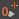

若要访问“动画层编辑器”(Animation Layer Editor)，请执行以下操作：
- 切换到“通道盒”(Channel Box)下面的“动画”(Anim)选项卡。
- 若要将“动画层编辑器”(Animation Layer Editor)作为单独的窗口打开，请切换到“通道盒”(Channel Box)底部的“动画”(Anim)选项卡，然后从“动画层编辑器”(Animation Layer Editor)菜单栏中选择。
“动画层编辑器”(Animation Layer Editor)包含菜单栏、工具栏和动画层窗格。
下表简要概述了使用“动画层编辑器”(Animation Layer Editor)的各项任务。
| 若要... | 操作 |
|---|---|
|
为选定对象创建动画层。 |
单击 |
|
创建空动画层。 |
单击 |
|
更改动画层模式。 |
在层上单击鼠标右键，选择“层模式”(Layer Mode)，然后选择“相加”(Additive)、“覆盖”(Override)或“通过”(Passthrough)。有关信息，请参见动画层模式。 |
|
将动画从场景中的选定对象提取到某一层。 |
在“基础动画”(BaseAnimation)栏上单击鼠标右键，并选择“为选定对象提取未分层的动画”(Extract Non-Layered Animation for Selected Objects)。 |
|
重新排列堆栈中的层。 |
选择该层，并使用鼠标中键将其拖到堆栈中的新位置，也可使用上移 |
|
父层。 |
选择层，并使用鼠标中键将其拖动到希望作为其父层的层上。 |
|
打开“关系编辑器”(Relationship Editor)添加或移除层的属性。 |
从菜单栏中选择。 |
|
在“大纲视图”(Outliner)中显示资产。 |
在“动画”(Animation)首选项（在“设置”(Settings)下）的“曲线图编辑器”(Graph Editor)部分中，启用“显示资产”(Display Assets)。 |
|
删除层。 |
选择要删除的层，然后从菜单栏中选择。 |
|
设置 0 关键帧。 （另请参见在动画层上为对象设置关键帧。） |
单击 |
|
设定该层权重并在位置 0 处设置层的关键帧。 |
单击 。 |
|
设定该层权重并在位置 1 处设置层的关键帧。 |
单击 |